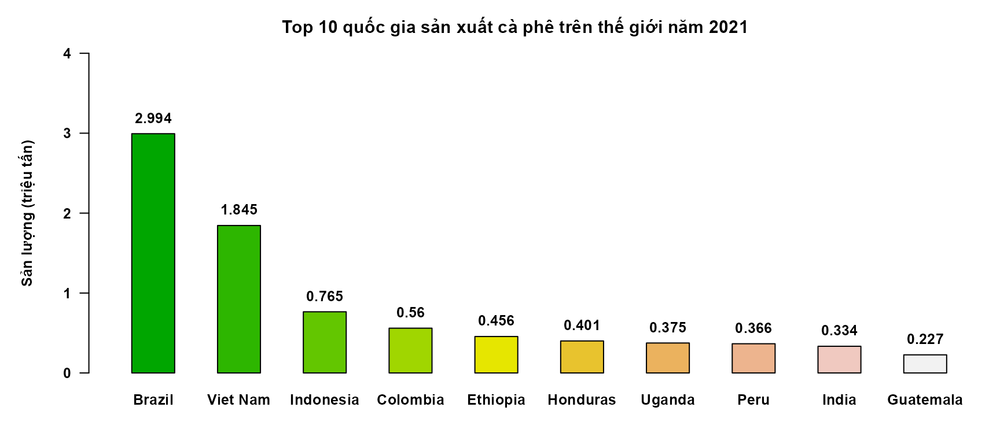
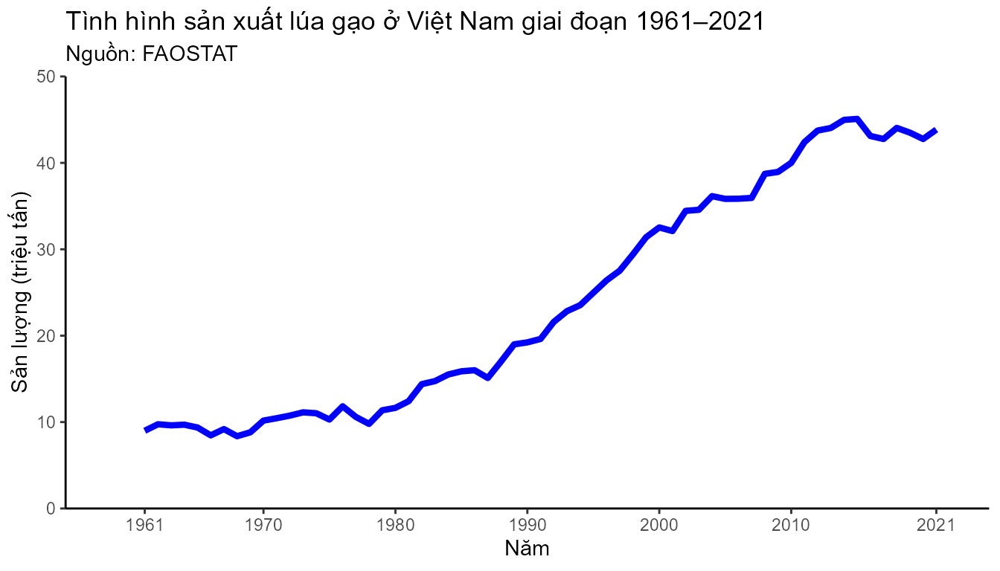
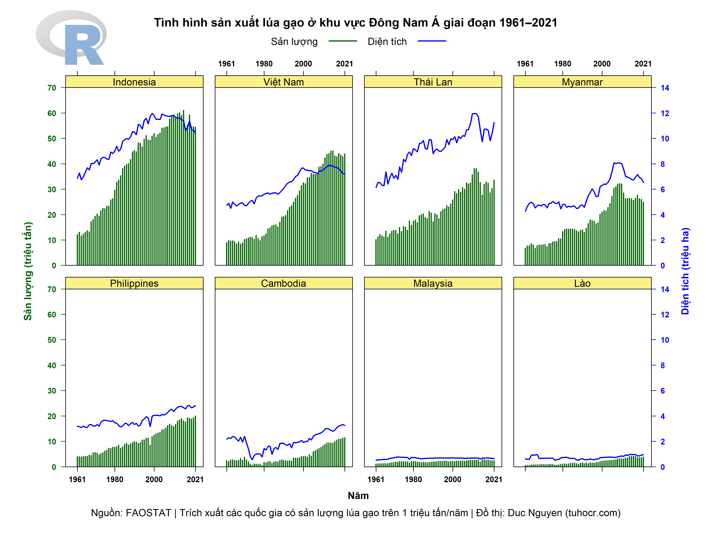
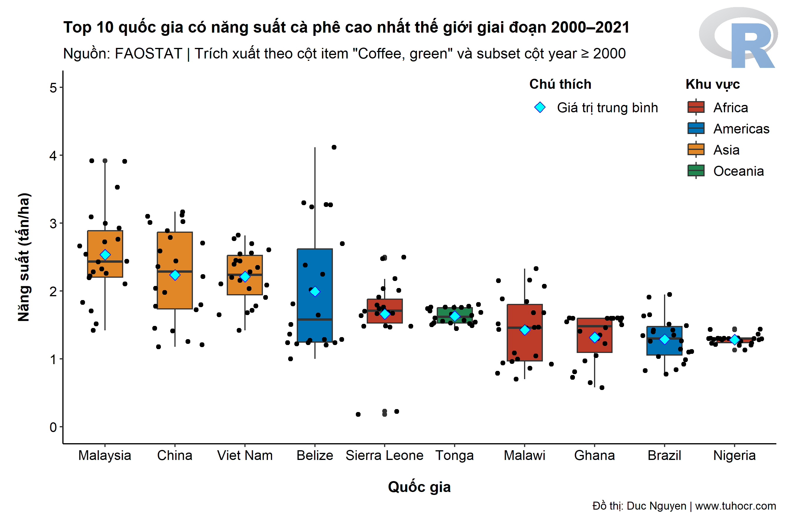

Hướng dẫn trích xuất dữ liệu từ FAOSTAT
Duc Nguyen | www.tuhocr.com
2023-11-08
Source:vignettes/filter_faostat.Rmd
filter_faostat.RmdQuy trình thực hiện
Thông thường để trích xuất dữ liệu nông sản từ FAOSTAT, bạn sẽ lên
trực tiếp trang web https://www.fao.org/faostat/en/ và tải
về dataset liên quan cũng như sử dụng các công cụ lọc dữ liệu và vẽ đồ
thị được cung cấp sẵn trên website.
Để thực hiện việc này nhanh gọn trong R thì bạn cần các bước sau:
1/ Bạn sử dụng package FAOSTAT để download tự
động dataset R về máy tính.
- download dataset mã
QCLdành cho nông sản
# install.packages("FAOSTAT")
# library(FAOSTAT)
# search_dataset(dataset_code = "QCL",
# latest = TRUE,
# reset_cache = FALSE)
#
# crop_production <- get_faostat_bulk(code = "QCL",
# data_folder = "./")
# bạn có thể lưu file này ra dạng .RDS để sau này đọc lại từ R sẽ nhanh hơn,
# không cần download lại từ FAOSTAT.
# saveRDS(crop_production, "crop_production.rds")
# crop_production <- readRDS("crop_production.rds")- download file csv chứa danh sách quốc gia và vùng lãnh thổ
# chọn Country/Region ở link này https://www.fao.org/faostat/en/#definitions2/ Import 2 file ở trên vào R và sử dụng function để trích xuất dữ liệu.
Khi bạn download package tuhocr về máy tính thì mình đã
để sẵn 2 file crop_production_all_data.rds và
FAOSTAT_data_3-21-2023.csv ở thời điểm tháng 3/2023 rồi, vì
vậy bạn có thể dùng các file này để trích xuất dữ liệu.
Trong ví dụ minh họa này mình dùng function
filter_faostat() để trích xuất ra 10 quốc gia sản xuất cà
phê nhiều nhất trên thế giới năm 2021. Tham số rank_filter
và year_filter được thiết kế để lọc dữ liệu theo thứ hạng
và theo các mốc thời gian khác nhau tùy vào nhu cầu phân tích dữ
liệu.
# df_1 <- readRDS("crop_production.rds")
# df_2 <- read.csv("FAOSTAT_data_2023.csv")
crop_production <- system.file("extdata",
"crop_production_all_data.rds",
package = "tuhocr")
df_1 <- readRDS(crop_production)
FAOSTAT_data_2023 <- system.file("extdata",
"FAOSTAT_data_3-21-2023.csv",
package = "tuhocr")
df_2 <- read.csv(FAOSTAT_data_2023)
library(tuhocr)
# Thực hiện dòng lệnh sẽ thu được danh sách các quốc gia
# sản xuất cà phê trên thế giới được sắp xếp theo
# thứ hạng và năm.
coffee_data <- filter_faostat(data_rds = df_1,
data_region = df_2,
item_filter = "Coffee, green",
rank_filter = 1:10,
year_filter = c(2021))
coffee_data
#> rank area item year production area_harvested yield
#> 1 1 Brazil Coffee, green 2021 2993780.0 1836741 1.63
#> 2 2 Viet Nam Coffee, green 2021 1845033.0 653192 2.82
#> 3 3 Indonesia Coffee, green 2021 765415.0 1249615 0.61
#> 4 4 Colombia Coffee, green 2021 560340.0 840112 0.67
#> 5 5 Ethiopia Coffee, green 2021 456000.0 685294 0.67
#> 6 6 Honduras Coffee, green 2021 400674.4 336318 1.19
#> 7 7 Uganda Coffee, green 2021 374760.0 692553 0.54
#> 8 8 Peru Coffee, green 2021 365582.1 454717 0.80
#> 9 9 India Coffee, green 2021 334000.0 422924 0.79
#> 10 10 Guatemala Coffee, green 2021 226700.0 363875 0.62
str(coffee_data)
#> 'data.frame': 10 obs. of 7 variables:
#> $ rank : chr "1" "2" "3" "4" ...
#> $ area : Factor w/ 81 levels "Mauritius","Saint Lucia",..: 81 80 79 78 77 76 75 74 73 72
#> $ item : chr "Coffee, green" "Coffee, green" "Coffee, green" "Coffee, green" ...
#> $ year : int 2021 2021 2021 2021 2021 2021 2021 2021 2021 2021
#> $ production : num 2993780 1845033 765415 560340 456000 ...
#> $ area_harvested: num 1836741 653192 1249615 840112 685294 ...
#> $ yield : num 1.63 2.82 0.61 0.67 0.67 1.19 0.54 0.8 0.79 0.623/ Nếu bạn muốn trích xuất toàn bộ các quốc gia sản xuất nông sản thì ta dùng cách sau`
Trong ví dụ minh họa này mình dùng function
extract_faostat() để trích xuất toàn bộ các quốc gia sản
xuất đậu nành trên thế giới theo tất cả các năm trong bộ dataset này.
Trên cơ sở dataset thu được bạn sẽ lọc tiếp ra các thông tin liên quan
đến nhu cầu xử lý dữ liệu và vẽ đồ thị.
soya_data <- extract_faostat(input_rds = df_1,
input_region = df_2,
input_item = "Soya beans")
head(soya_data, n = 30)
#> area item year production area_harvested yield
#> 1 United States of America Soya beans 2021 120707230 34937700 3.45
#> 2 United States of America Soya beans 2020 114748940 33428610 3.43
#> 3 United States of America Soya beans 2019 96667090 30327060 3.19
#> 4 United States of America Soya beans 2018 120514490 35448420 3.40
#> 5 United States of America Soya beans 2017 120064970 36236750 3.31
#> 6 United States of America Soya beans 2016 116931500 33470290 3.49
#> 7 United States of America Soya beans 2015 106953940 33123470 3.23
#> 8 United States of America Soya beans 2014 106877870 33423750 3.20
#> 9 United States of America Soya beans 2013 91389350 30858830 2.96
#> 10 United States of America Soya beans 2012 82790870 30814720 2.69
#> 11 United States of America Soya beans 2011 84291400 29856410 2.82
#> 12 United States of America Soya beans 2010 90663290 31003300 2.92
#> 13 United States of America Soya beans 2009 91469550 30906980 2.96
#> 14 United States of America Soya beans 2008 80748700 30222650 2.67
#> 15 United States of America Soya beans 2007 72859180 25959240 2.81
#> 16 United States of America Soya beans 2006 87000620 30190680 2.88
#> 17 United States of America Soya beans 2005 83506580 28834570 2.90
#> 18 United States of America Soya beans 2004 85015630 29930060 2.84
#> 19 United States of America Soya beans 2003 66782720 29330310 2.28
#> 20 United States of America Soya beans 2002 75010030 29338810 2.56
#> 21 United States of America Soya beans 2001 78671470 29532250 2.66
#> 22 United States of America Soya beans 2000 75055290 29302790 2.56
#> 23 United States of America Soya beans 1999 72223460 29318170 2.46
#> 24 United States of America Soya beans 1998 74598180 28506770 2.62
#> 25 United States of America Soya beans 1997 73175780 27968130 2.62
#> 26 United States of America Soya beans 1996 64780440 25636710 2.53
#> 27 United States of America Soya beans 1995 59173500 24906240 2.38
#> 28 United States of America Soya beans 1994 68443520 24608790 2.78
#> 29 United States of America Soya beans 1993 50885390 23191570 2.19
#> 30 United States of America Soya beans 1992 59611670 23566310 2.53Danh sách cây trồng
Dataset của FAOSTAT bao gồm các loại nông sản nhóm trồng trọt và chăn
nuôi. Các function extract_faostat() và
filter_faostat() được thiết kế để lọc dữ liệu trong nhóm
trồng trọt (là các nông sản được ghi nhận sản lượng và diện tích canh
tác). Đây là danh sách nhóm nông sản cây trồng giúp bạn tham khảo khi
cần trích xuất loại cây trồng cụ thể.
crop_full <- df_1
ok <- as.data.frame(table(crop_full$item, crop_full$element))
ok_1 <- ok |> subset(Freq != 0)
ok_2 <- reshape(data = ok_1,
idvar = c("Var1"),
v.names = "Freq",
timevar = "Var2",
direction = "wide")
ok_2[!is.na(ok_2$Freq.area_harvested) & !is.na(ok_2$Freq.production), ] -> ok_3
as.character(ok_3$Var1) -> crop_item
crop_item
#> [1] "Abaca, manila hemp, raw"
#> [2] "Agave fibres, raw, n.e.c."
#> [3] "Almonds, in shell"
#> [4] "Anise, badian, coriander, cumin, caraway, fennel and juniper berries, raw"
#> [5] "Apples"
#> [6] "Apricots"
#> [7] "Areca nuts"
#> [8] "Artichokes"
#> [9] "Asparagus"
#> [10] "Avocados"
#> [11] "Bambara beans, dry"
#> [12] "Bananas"
#> [13] "Barley"
#> [14] "Beans, dry"
#> [15] "Blueberries"
#> [16] "Brazil nuts, in shell"
#> [17] "Broad beans and horse beans, dry"
#> [18] "Broad beans and horse beans, green"
#> [19] "Buckwheat"
#> [20] "Cabbages"
#> [21] "Canary seed"
#> [22] "Cantaloupes and other melons"
#> [23] "Carrots and turnips"
#> [24] "Cashew nuts, in shell"
#> [25] "Cashewapple"
#> [26] "Cassava leaves"
#> [27] "Cassava, fresh"
#> [28] "Castor oil seeds"
#> [29] "Cauliflowers and broccoli"
#> [30] "Cereals n.e.c."
#> [31] "Cereals, primary"
#> [32] "Cherries"
#> [33] "Chestnuts, in shell"
#> [34] "Chick peas, dry"
#> [35] "Chicory roots"
#> [36] "Chillies and peppers, dry (Capsicum spp., Pimenta spp.), raw"
#> [37] "Chillies and peppers, green (Capsicum spp. and Pimenta spp.)"
#> [38] "Cinnamon and cinnamon-tree flowers, raw"
#> [39] "Citrus Fruit, Total"
#> [40] "Cloves (whole stems), raw"
#> [41] "Cocoa beans"
#> [42] "Coconuts, in shell"
#> [43] "Coffee, green"
#> [44] "Coir, raw"
#> [45] "Cow peas, dry"
#> [46] "Cranberries"
#> [47] "Cucumbers and gherkins"
#> [48] "Currants"
#> [49] "Dates"
#> [50] "Edible roots and tubers with high starch or inulin content, n.e.c., fresh"
#> [51] "Eggplants (aubergines)"
#> [52] "Fibre Crops, Fibre Equivalent"
#> [53] "Figs"
#> [54] "Flax, processed but not spun"
#> [55] "Fonio"
#> [56] "Fruit Primary"
#> [57] "Ginger, raw"
#> [58] "Gooseberries"
#> [59] "Grapes"
#> [60] "Green corn (maize)"
#> [61] "Green garlic"
#> [62] "Groundnuts, excluding shelled"
#> [63] "Hazelnuts, in shell"
#> [64] "Hempseed"
#> [65] "Hop cones"
#> [66] "Jojoba seeds"
#> [67] "Jute, raw or retted"
#> [68] "Kapok fruit"
#> [69] "Karite nuts (sheanuts)"
#> [70] "Kenaf, and other textile bast fibres, raw or retted"
#> [71] "Kiwi fruit"
#> [72] "Kola nuts"
#> [73] "Leeks and other alliaceous vegetables"
#> [74] "Lemons and limes"
#> [75] "Lentils, dry"
#> [76] "Lettuce and chicory"
#> [77] "Linseed"
#> [78] "Locust beans (carobs)"
#> [79] "Lupins"
#> [80] "Maize (corn)"
#> [81] "Mangoes, guavas and mangosteens"
#> [82] "Maté leaves"
#> [83] "Melonseed"
#> [84] "Millet"
#> [85] "Mixed grain"
#> [86] "Mushrooms and truffles"
#> [87] "Mustard seed"
#> [88] "Natural rubber in primary forms"
#> [89] "Nutmeg, mace, cardamoms, raw"
#> [90] "Oats"
#> [91] "Oil palm fruit"
#> [92] "Oilcrops, Cake Equivalent"
#> [93] "Oilcrops, Oil Equivalent"
#> [94] "Okra"
#> [95] "Olives"
#> [96] "Onions and shallots, dry (excluding dehydrated)"
#> [97] "Onions and shallots, green"
#> [98] "Oranges"
#> [99] "Other beans, green"
#> [100] "Other berries and fruits of the genus vaccinium n.e.c."
#> [101] "Other citrus fruit, n.e.c."
#> [102] "Other fibre crops, raw, n.e.c."
#> [103] "Other fruits, n.e.c."
#> [104] "Other nuts (excluding wild edible nuts and groundnuts), in shell, n.e.c."
#> [105] "Other oil seeds, n.e.c."
#> [106] "Other pome fruits"
#> [107] "Other pulses n.e.c."
#> [108] "Other stimulant, spice and aromatic crops, n.e.c."
#> [109] "Other stone fruits"
#> [110] "Other sugar crops n.e.c."
#> [111] "Other tropical fruits, n.e.c."
#> [112] "Other vegetables, fresh n.e.c."
#> [113] "Papayas"
#> [114] "Peaches and nectarines"
#> [115] "Pears"
#> [116] "Peas, dry"
#> [117] "Peas, green"
#> [118] "Pepper (Piper spp.), raw"
#> [119] "Peppermint, spearmint"
#> [120] "Persimmons"
#> [121] "Pigeon peas, dry"
#> [122] "Pineapples"
#> [123] "Pistachios, in shell"
#> [124] "Plantains and cooking bananas"
#> [125] "Plums and sloes"
#> [126] "Pomelos and grapefruits"
#> [127] "Poppy seed"
#> [128] "Potatoes"
#> [129] "Pulses, Total"
#> [130] "Pumpkins, squash and gourds"
#> [131] "Pyrethrum, dried flowers"
#> [132] "Quinces"
#> [133] "Quinoa"
#> [134] "Ramie, raw or retted"
#> [135] "Rape or colza seed"
#> [136] "Raspberries"
#> [137] "Rice"
#> [138] "Roots and Tubers, Total"
#> [139] "Rye"
#> [140] "Safflower seed"
#> [141] "Seed cotton, unginned"
#> [142] "Sesame seed"
#> [143] "Sisal, raw"
#> [144] "Sorghum"
#> [145] "Sour cherries"
#> [146] "Soya beans"
#> [147] "Spinach"
#> [148] "Strawberries"
#> [149] "String beans"
#> [150] "Sugar beet"
#> [151] "Sugar cane"
#> [152] "Sugar Crops Primary"
#> [153] "Sunflower seed"
#> [154] "Sweet potatoes"
#> [155] "Tallowtree seeds"
#> [156] "Tangerines, mandarins, clementines"
#> [157] "Taro"
#> [158] "Tea leaves"
#> [159] "Tomatoes"
#> [160] "Treenuts, Total"
#> [161] "Triticale"
#> [162] "True hemp, raw or retted"
#> [163] "Tung nuts"
#> [164] "Unmanufactured tobacco"
#> [165] "Vanilla, raw"
#> [166] "Vegetables Primary"
#> [167] "Vetches"
#> [168] "Walnuts, in shell"
#> [169] "Watermelons"
#> [170] "Wheat"
#> [171] "Yams"
#> [172] "Yautia"Ứng dụng để vẽ đồ thị nhanh chóng
Vẽ đồ thị cột
coffee_data <- filter_faostat(data_rds = df_1,
data_region = df_2,
item_filter = "Coffee, green",
rank_filter = 1:10,
year_filter = 2021)
## vì kết quả trả về ở dạng factor cho danh sách các quốc gia
## bạn cần reset lại giá trị factor này để reorder lại theo đúng ý bạn muốn
## giúp việc vẽ đồ thị được thuận lợi.
coffee_data$area <- as.character(coffee_data$area)
coffee_data$area <- reorder(coffee_data$area, coffee_data$production, decreasing = TRUE)
coffee_data$production <- coffee_data$production / 1000000
label <- coffee_data$production
names(label) <- coffee_data$area
round(label, digits = 3) -> label
par(mar = c(4, 5, 3, 3))
par(cex = 0.8)
par(font.axis = 2)
par(font.lab = 2)
b <- barplot(production ~ area,
coffee_data,
xaxs = "i",
yaxs = "i",
las = 1,
xlim = c(0, 10),
ylim = c(0, 4),
width = c(0.5, 0.5, 0.5, 0.5, 0.5, 0.5, 0.5, 0.5, 0.5, 0.5),
space = c(1, 1, 1, 1, 1, 1, 1, 1, 1, 1),
beside = TRUE,
horiz = FALSE,
xlab = "",
ylab = "Sản lượng (triệu tấn)",
col = terrain.colors(n = 10),
border = "black")
text(b, label + 0.2, label, font = 2, col = "black")
title(main = "Top 10 quốc gia sản xuất cà phê trên thế giới năm 2021 ")
Vẽ đồ thị đường
rice_data <- extract_faostat(input_rds = df_1,
input_region = df_2,
input_item = "Rice")
rice_data |> subset(area == "Viet Nam") -> rice_vietnam
head(rice_vietnam)
#> area item year production area_harvested yield
#> 306 Viet Nam Rice 2021 43852729 7219797 6.07
#> 307 Viet Nam Rice 2020 42765000 7222403 5.92
#> 308 Viet Nam Rice 2019 43495488 7451544 5.84
#> 309 Viet Nam Rice 2018 44046250 7570741 5.82
#> 310 Viet Nam Rice 2017 42763682 7708534 5.55
#> 311 Viet Nam Rice 2016 43112010 7734722 5.57
library(ggplot2)
ggplot(data = rice_vietnam, mapping = aes(x = year, y = production / 1000000)) +
geom_line(color = "blue", linewidth = 1.5) +
scale_x_continuous(expand = c(0, 0),
limits = c(1955, 2025),
breaks = c(1961, 1970, 1980, 1990, 2000, 2010, 2021)) +
scale_y_continuous(expand = c(0, 0),
limits = c(0, 50),
breaks = c(0, 10, 20, 30, 40, 50)) +
labs(x = "Năm",
y = "Sản lượng (triệu tấn)",
title = "Tình hình sản xuất lúa gạo ở Việt Nam giai đoạn 1961–2021",
subtitle = "Nguồn: FAOSTAT") +
theme_classic()
Vẽ đồ thị cột và đường
Dữ liệu gạo được trích xuất theo function
extract_faostat() cho toàn bộ các quốc gia trên thế giới,
sau đó lọc theo các quốc gia khu vực Đông Nam Á. Hướng
dẫn cách vẽ bằng package lattice
knitr::include_graphics("rice_sea.png")
Vẽ đồ thị hộp
Dữ liệu cà phê được trích xuất theo function
filter_faostat() cho các năm từ 2000 đến 2021 ở các quốc
gia thứ hạng từ 1 đến 10. Hướng
dẫn cách vẽ bằng package ggplot2
knitr::include_graphics("coffee_boxplot.png")
Xây dựng function giúp lọc dữ liệu từ các dataset khác?
Function extract_faostat() và
filter_faostat() là kết quả từ chuyên đề 1+: Học
R Siêu Nhanh Qua Case Study FAOSTAT mình có hướng dẫn rất cụ thể
cách download dataset, xử lý dữ liệu đầu vào, vẽ đồ thị bằng Base R
Graphics và bằng package ggplot2. Ở phần bài tập project
(Section 6: Bài 26 đến 32) được trình bày chi tiết về cách xây dựng 2
function trên, áp dụng lệnh lapply để loop trên toàn bộ
dataset cũng như các lưu ý để kiểm tra tính chính xác của function qua
các tình huống thực tế.
Như vậy, nếu bạn muốn xây dựng một funtion tương tự để lọc trên các dataset khác (ví dụ như WORLD BANK) thì bạn nên học qua chuyên đề 1+ này để có nền tảng về workflow xây dựng function và phân tích dữ liệu trong R. Từ đây bạn sẽ dễ dàng áp dụng các đoạn code cũng như kinh nghiệm từ khóa học để tự tay làm ra các function xử lý dữ liệu theo ý của mình.
Chúc các bạn ứng dụng R có hiệu quả vào công việc.